บทความนี้จะแนะนำวิธีการใช้งาน UVVM บน Modelsim โดยจะลองมาให้ simulate IP ใน zynq
Vivado โดยทั่วไปใช้ XSim เป็นเครื่องมือจำสำหรับ simulate แต่คราวนี้เราจะลองเอา Modelsim เป็น tools ในการ simulate แทน ขั้นตอนหลักในการรันการจำลองด้วย Modelsim มีดังนี้:
ข้อควรทราบ: AXI Verification IP จำเป็นต้องมี license เฉพาะ ถ้าไม่มี license Modelsim อาจไม่สามารถจำลอง AXI Verification IP ได้
ก่อนที่จะใช้ Modelsim จำเป็นต้องคอมไพล์ไลบรารีจำลองของ Xilinx เพื่อให้ Modelsim รู้จัก IP ต่างๆ ของ Xilinx ทำได้โดย
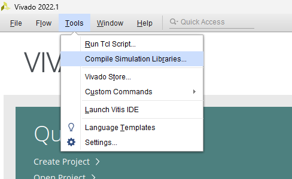
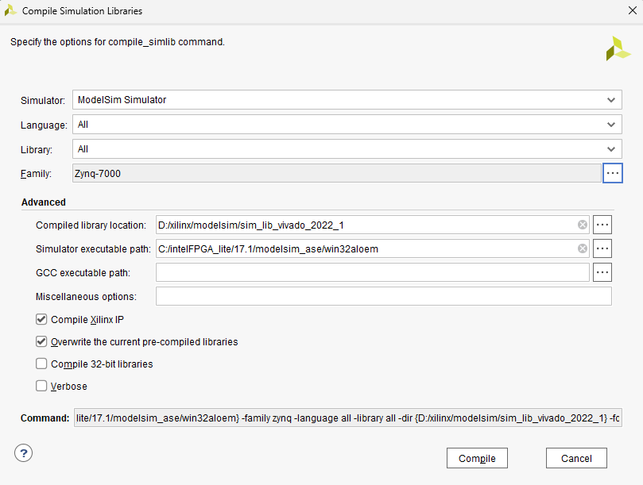
เมื่อการคอมไพล์เสร็จสิ้น ไฟล์ modelsim.ini จะถูกสร้างขึ้นด้วย ไฟล์นี้คือสคริปต์การเริ่มต้นที่ Modelsim ใช้ในการโหลดไลบรารี Xilinx เมื่อ Modelsim เริ่มทำงาน
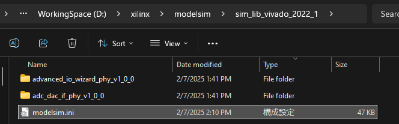
ข้อควรพิจารณา:
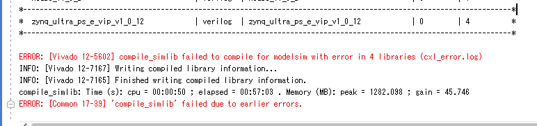
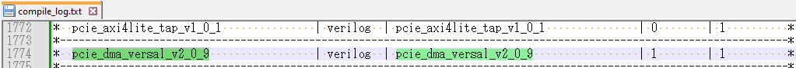
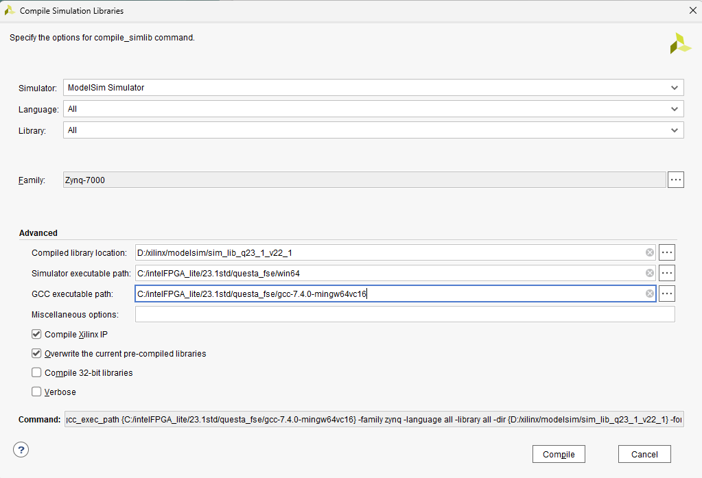
สำหรับดีไซน์ที่ไม่ใช้ Xilinx VIP การจำลองด้วย Modelsim จะง่ายกว่า:
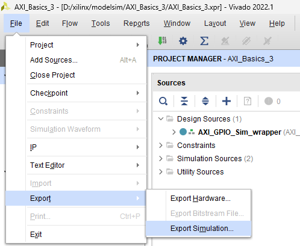
compile.do และ simulate.do อยู่ใต้ Folder "sim" ในโปรเจกต์ของคุณquit -force ในสคริปต์ simulate.do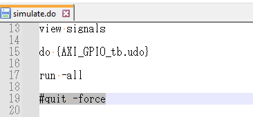

ตัวอย่างคำสั่งสำหรับการรันการจำลองที่ใช้ UVVM ร่วมกับ Modelsim:
cd d:/xilinx/modelsim/AXI_Basics_3/UVVM_Light-master/sim/ do ./compile_and_run_demo_tb.do
do ./sim.do
สำหรับ xil_defaultlib uvvm_util.tb_axs_iomap xil_defaultlib.glbl นี้มักจะเป็นส่วนหนึ่งของคำสั่ง vsim เพื่อระบุไลบรารีและเอนทิตี้ที่จะจำลอง
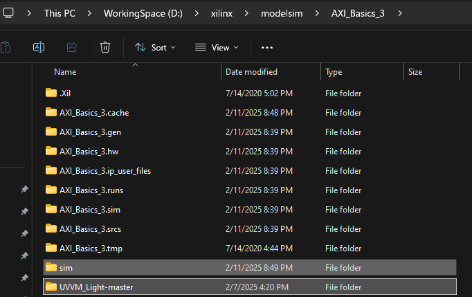
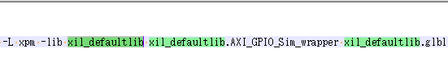
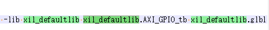

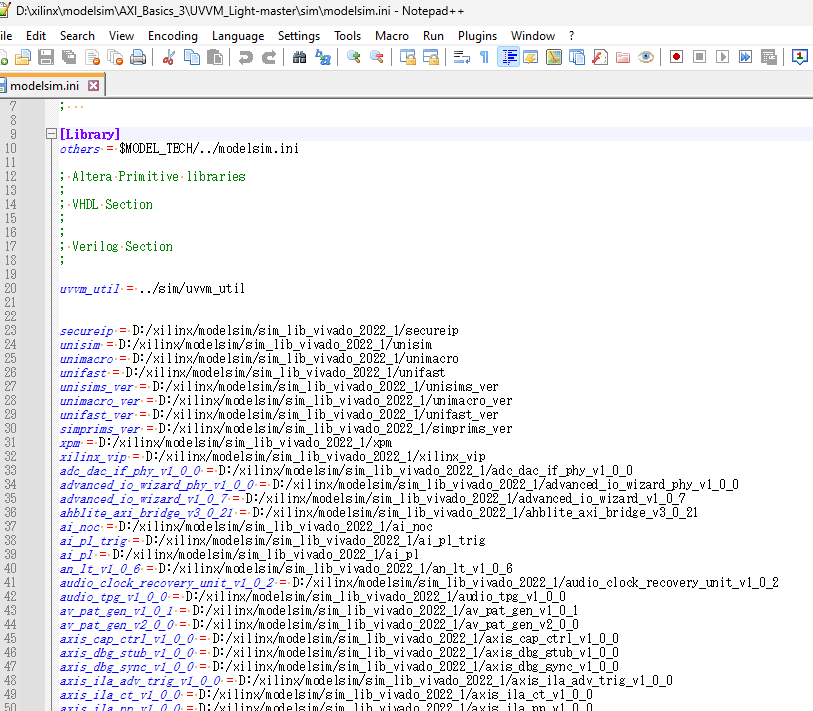
สำหรับ simulate ดีไซน์ Zynq ที่ซับซ้อนขึ้นด้วย UVVM และ Modelsim ต้องมีการปรับแต่งไฟล์สคริปต์บางส่วน:
modelsim.ini (ที่ใช้สำหรับโหลดไลบรารี Xilinx) ไปยังไดเรกทอรี UVVM_Light-master\sim
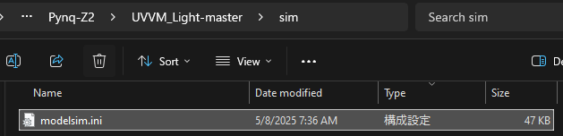
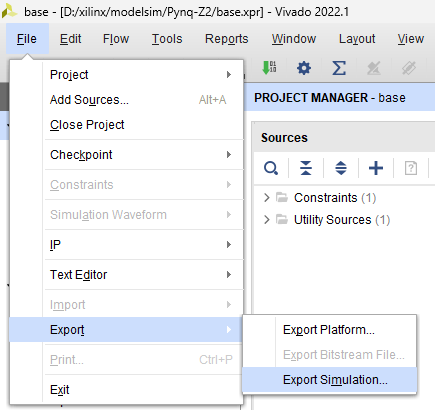
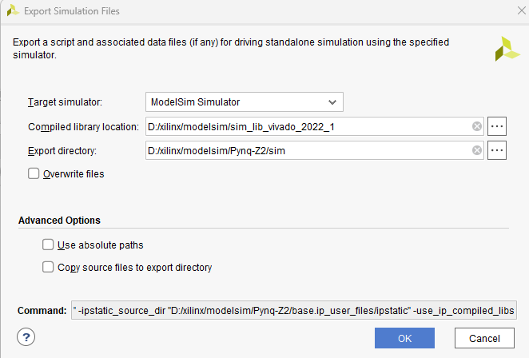
Pynq-Z2\sim\compile.do:
vlib modelsim_lib เพื่อสร้างไลบรารีสำหรับ Modelsiminclude vip (หากมี) เพื่อหลีกเลี่ยงปัญหาเกี่ยวกับ Xilinx VIPbase_ps7_0_0 (เราจะใช้ UVVM แทน)tb_prj_top.v และ glbl.v ดังนี้:
"../../UVVM_Light-master/tb/tb_prj_top.v" \
"../../sim/modelsim/glbl.v"
tb_prj_top.v: ในกรณีของ Vivado (XSim) ไฟล์ tb_prj_top.v อาจใช้ Xilinx VIP เพื่อควบคุม AXI bus แต่หากต้องการควบคุมด้วย UVVM ให้คอมเมนต์ออกส่วนที่เกี่ยวข้องกับ Xilinx VIP ทั้งหมดในไฟล์นี้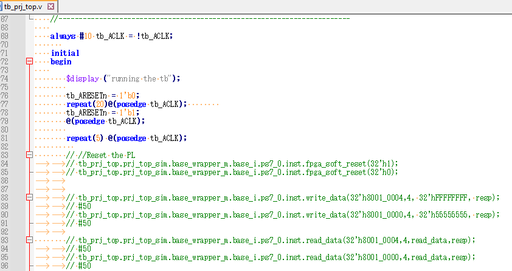
Pynq-Z2\UVVM_Light-master\sim\compile_and_run_demo_tb.do:
do ../../sim/modelsim/compile.do
vlib uvvm_util
eval vcom $compdirectives -work xil_defaultlib ../tb/base_ps7_0_0.vhd
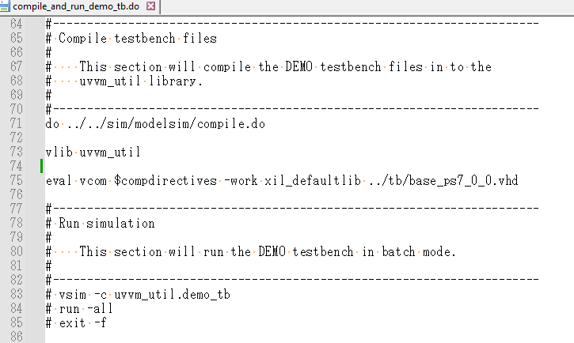
base_ps7_0_0.vhd ควรมีลอจิกการควบคุม UVVM สำหรับ PS (Processing System) ของ Zynqbase_ps7_0_0.vhd และ tb_prj_top.v ไว้ใน Pynq-Z2\UVVM_Light-master\tb\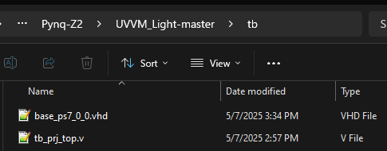
sim.do ใน Pynq-Z2\UVVM_Light-master\sim:
vsim จาก Pynq-Z2\sim\simulate.dovsim (ถ้ามีการใช้ library VIP จะ error เพราะเราไม่มี license)Pynq-Z2\UVVM_Light-master\sim\sim.do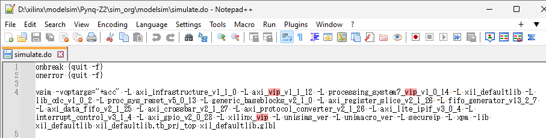
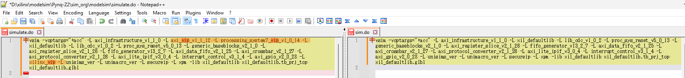
cd d:/xilinx/modelsim/Pynq-Z2/UVVM_Light-master/sim/
do ./compile_and_run_demo_tb.do
do ./sim.do
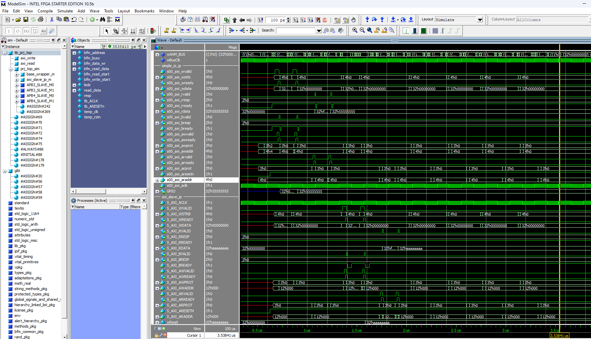